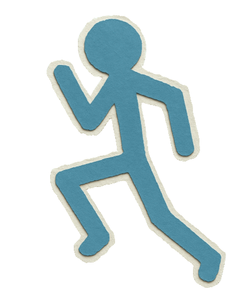

HÁBITOS COMPLETADOS EN EL MES
ASPECTOS POSITIVOS
Logros y Constancia
- Excelente cumplimiento en la lectura diaria y registro de apuntes técnicos.
- Mantenimiento de organizacion en la area educativa.
- Buena hidratacion de agua en los tiempos recomendados.
ASPECTOS NEGATIVOS
Áreas con Dificultades
- Poca frecuencia de actividad física.
- Horarios de descanso irregulares provocados por exceso de tiempo frente a pantallas a altas horas.
- Falta de nutrientes en comidas consumidas cotidianamente.
ANÁLISIS DE MEJORA Y ACCIONES CORRECTIVAS
¿En qué mejorar y qué hacer?
Área afectada: Descanso y Sueño
Problema: Horarios de sueño afectados por pantallas.
Solucion: Establecer una alarma obligatoria de apagado de dispositivos a las 23:00 hs y priorizar 7 horas de descanso continuo.
Área afectada: Actividad Física
Problema: Abandono de actividad fisica debido a tareas educativas.
Solucion: Reservar 20 minutos diarios por la tarde exclusivamente para caminatas tranquilas.
EL COMPROMISO ES LO PRIMERO
¿Queres constancia y cumplimiento?
Day To Day te ayuda a avanzar progresivamente llevando un control y cuenta de lo que haces para ayudarte independientemente de la situacion en la que te encuentres.
"El éxito sostenido no es un acto aislado, sino el resultado de hábitos estructurados y controlados en el tiempo"
Conta con tu Agenda para lo que te propongas

Crecimiento continuo